返 回
该底层人民的调研与设计项目历时半年，基于青岛里院（二战期间留下的德日文化建筑庭院，现已成为贫民窟）和中韩地区（招日工市场）。在调研过程中的亲身经历，让我们不得不为底层人民的艰辛与智慧感慨良多，以报告的形式记录不仅是为项目作总结，也希望向观众传达底层人民如何生活。或许无法改变，但求有所知，在己位谋己事，珍惜生活。
我们以数据的形式记录底层人民的生活，即该报告以数据可视化和信息设计的图表形式呈现。通过网络与书籍论文调研，问卷调研，用户访谈等方法数据搜集，进行数据分析与可视化，再进行产品服务设计，最后产出百页报告。在团队协作中，我主要负责数据收集，数据整理，数据可视化分析、报告撰写、图表绘制。
底层人民的研究与设计（点击查看PDF）
青岛里院简介： 青岛文史学家王铎解释，“里”和“院”是两个概念,“里”最初是为商业功能设计，“院”是于居住功能设计。1999年在制订《青岛历史文化名城总体规化》时，才将两概念合二为一，并从建筑文化和民俗的角度定义了里院。
里院是一种融合了中西方商住式风格的建筑样式，是与青岛殖民文化和城市文化共同发展的一种建筑形式。这种建筑通常临街而建，以两层和三层的楼房为主，属内天井式居住单元。曾经产生并兴盛于里院的商业和表演文化，是青岛民俗文化的丰富遗产。里院独特格局形成的和谐文化，一直使老青岛人无法割舍。如今，随着时代的演变，里院文化逐渐衰败，居住环境的拥挤，除了无法割舍的老一辈仍居住于此，里院变成了底层人民的租居之地。
青岛里院
里院建筑建造时间：通过引用论文中调研的46份档案（数据参考青岛里院建筑空间构成的研究.郭婧.2014）进行建筑研究：其建造时间均在1923-1953年之间。在1923年、1930年、1933年、1936年、1947年建造活动最为密集，这其中仅1933年就有7处里院建筑进行建造活动，这些活动包括对旧有里院的翻建和修复走廊等。
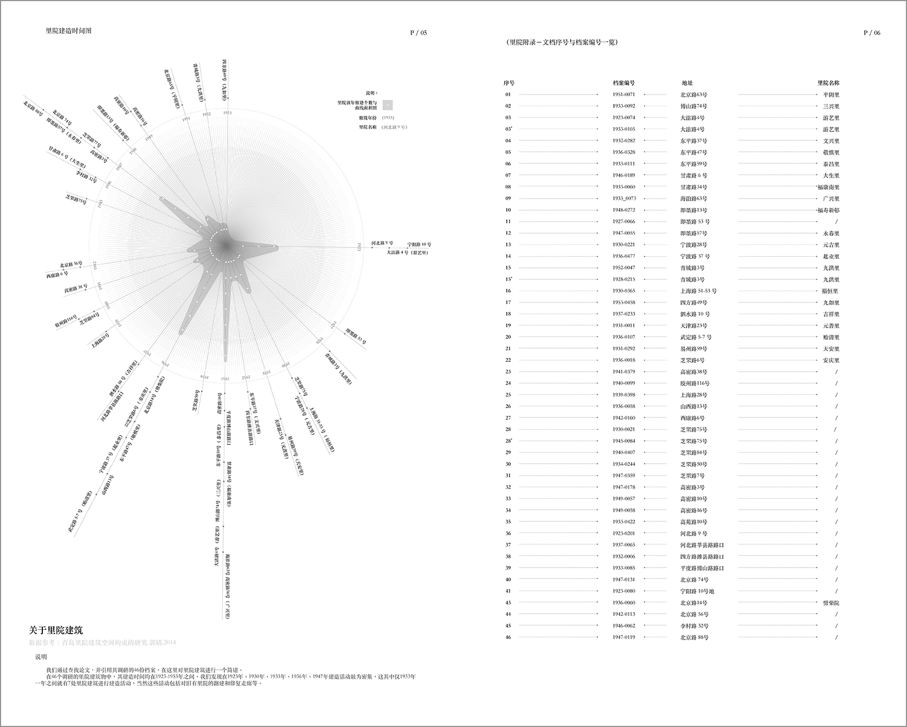里院建造翻修时间
里院建筑建造用途：建造里院的目的多为住房和店铺，部分兼做置物仓库。在46个档案样本中，有20个档案未说明。剩余26个里院：居室功能有22个（其中一个为工人宿舍），占84.6%；店铺功能有21个，占80.7%；仓库置物功能有4个，占15.4%。店铺及居室商住结合模式有15个，占57.7%。
里院建筑用地面积：里院中用地面积最大的是档案编号为1933-0073号的广兴里，它的用地面积2556平方米。而用地面积最小的是档案编号为1931-0011号的元善里，用地面积只有98平方米。各里院的用地面积均值是769平方米，对用地面积的进行正态分布统计发现，里院的用地面积范围在400-700平方米之间，用地面积集中分布在500平方米左右。
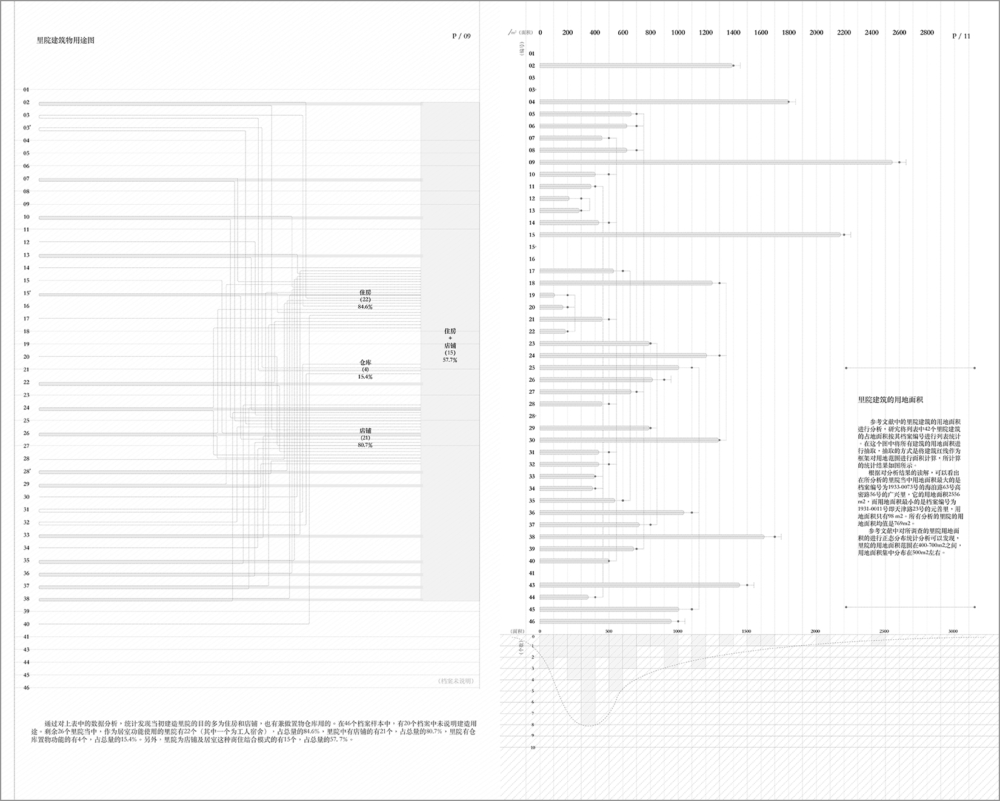里院建造用途及用地面积
里院建筑路网宽度：里院建筑相邻道路的宽度统计，相邻道路宽度多为12-16m。最宽为22m，是编号为37号的里院南侧道路河北路。最窄的7m，是编号35的里院南侧道路高苑路。此外，里院周边道路宽度在12-16m呈集中态势分布。
里院建筑院落空间：里院院落空间是核心部分，它提供了室内外空间的转换与过渡，也是邻里交往的重要场所。在所研宄的里院当中，里院院落面积最大的是广兴里（1275.48平方米），面积最小的是三兴里（6.01平方米），院落面积总体无明显规律性排布。里院长边在10m-17m范围内分布较集中，短边在4m-8m范围内分布较集中。此外，规则形状的里院院落空间当中，除个别如编号为30号、14号、20号的里院长宽比大于3，其他的长宽比大致分布在1.1－2.4之间。
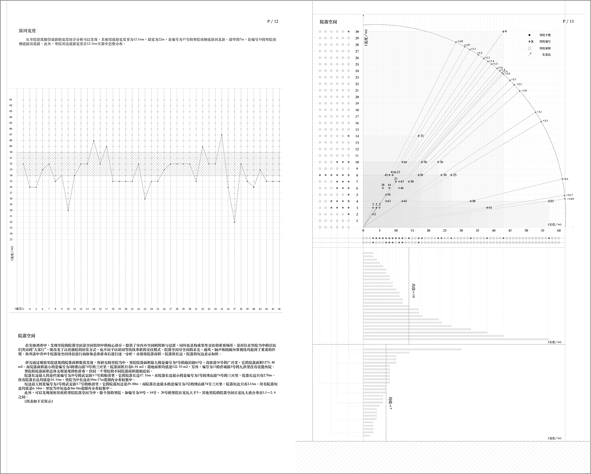里院路网宽度及院落空间
里院建筑居室空间：面积最大的是编号为12号的永春里(79.30平方米)，居室面积最小的是编号为20号的贻清里（6. 88平方米）。里院的居室面积均值是24.79平方米，集中分布在15-35平方米之间。
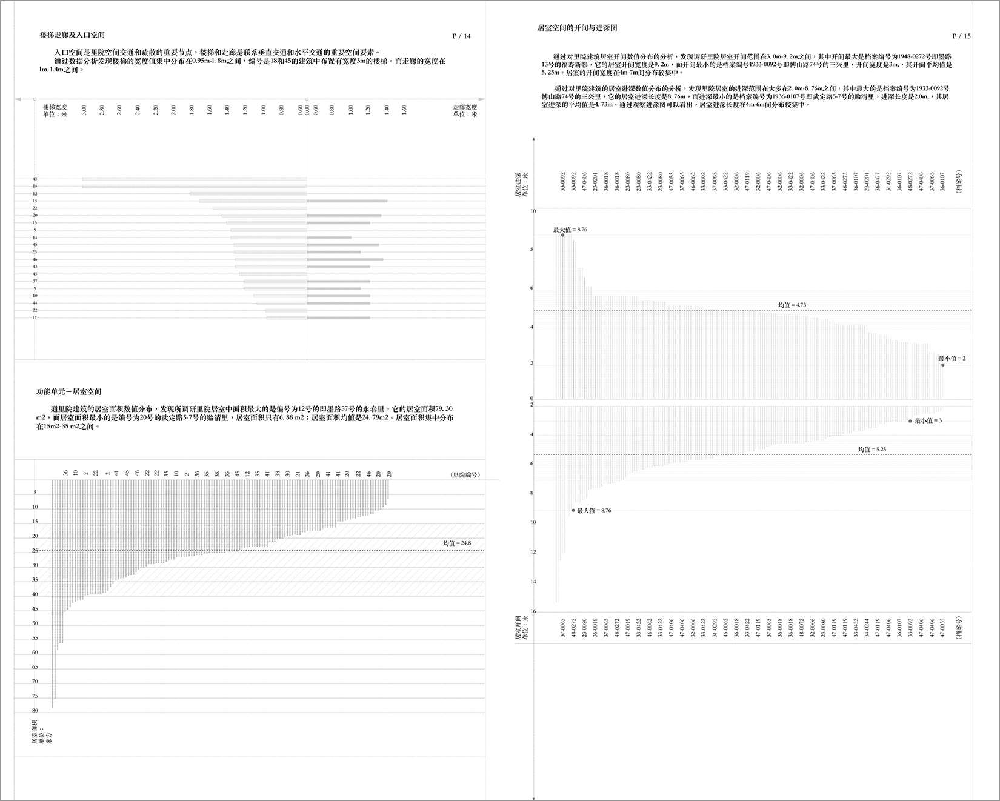里院建筑居室空间
里院建筑店铺空间：店铺中面积最大的是档案编号为1947-0406号的河北路1号地（115.43平方米），而店铺面积最小的是档案编号为1936-0477号的起业里（13.18平方米）。店铺面积平均值是36.45，集中分布在20－40之间，其中面积在20-30的居室有20个，店铺面积分布在30－40之间店铺有27个。
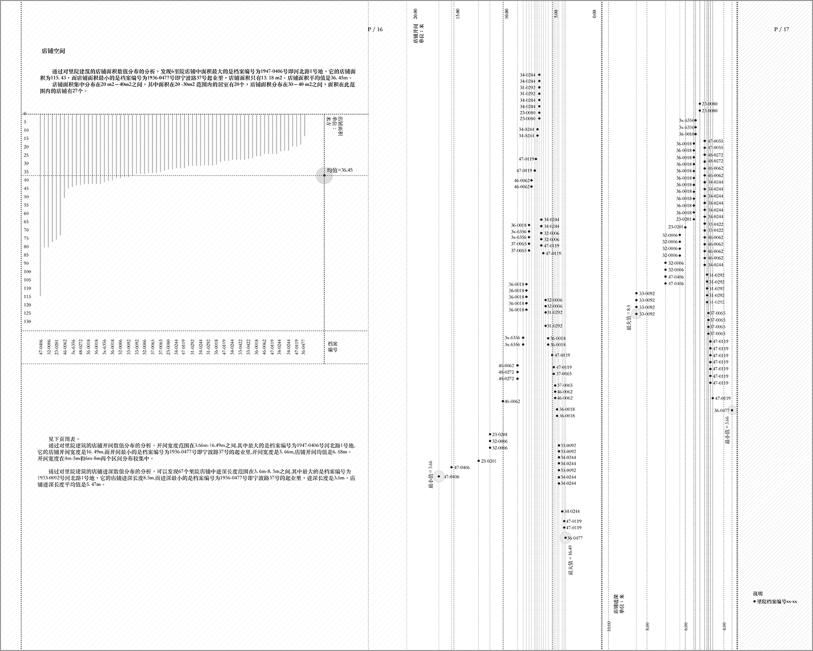里院建筑店铺空间
里院建筑厨房空间：里院厨房中面积范围在4.46-24.55m2平方米之间。其中面积最大的是档案编号为1932-0006号即四方路雜县路路口的里院（24.55平方米），厨房面积最小的是档案编号为1933-0092号的二兴里（4.46平方米），厨房面积均值是12.70平方米，集中分布在7-10和13-17两个区域之间。
里院建筑便所空间：便所空间面积范围在0.80到14.09平方米之间。其中面积最大的是广兴里（14.09平方米，公用便所类型），而便所面积最小的是三兴里（0.80平方米），便所面积的均值是4.85平方米。
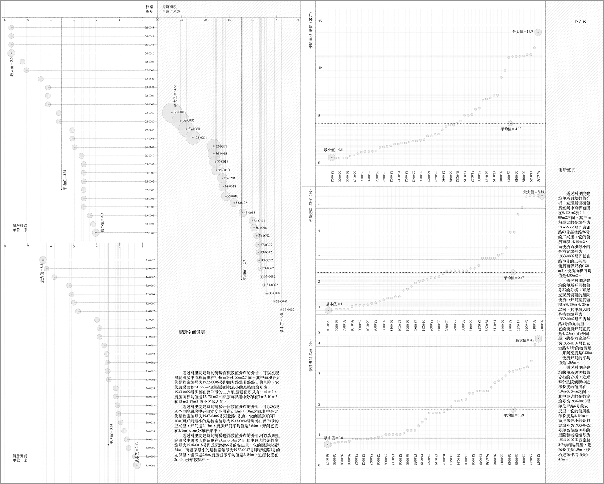里院建筑厨房及便所空间
洗衣及晾晒衣物问题：因为水资源供给有限，每层楼只有几个共用水龙头，用水洗衣非常不便。此外，里院晾衣服的方式非常特殊，可以说这也正是现代里院的特色之一。里院晾衣服用滑轮和绳子构建了一个晾衣机制。根据里院的构造，居民们一般在相对的两侧栏杆或者是成直角的栏杆上用铁丝捆住滑轮，再用一根很长的绳子与滑轮连接，再将绳子两端连接上打非常牢固的结，也有居民用不干胶缠绕粘贴固定该结，使得绳子形成了一个环形回路，再由于滑轮的结构和简单的力学原理，使得绳子可以根据滑轮位移，就能实现晾晒多件衣物到光强通风处，也同时满足收衣服的功能。
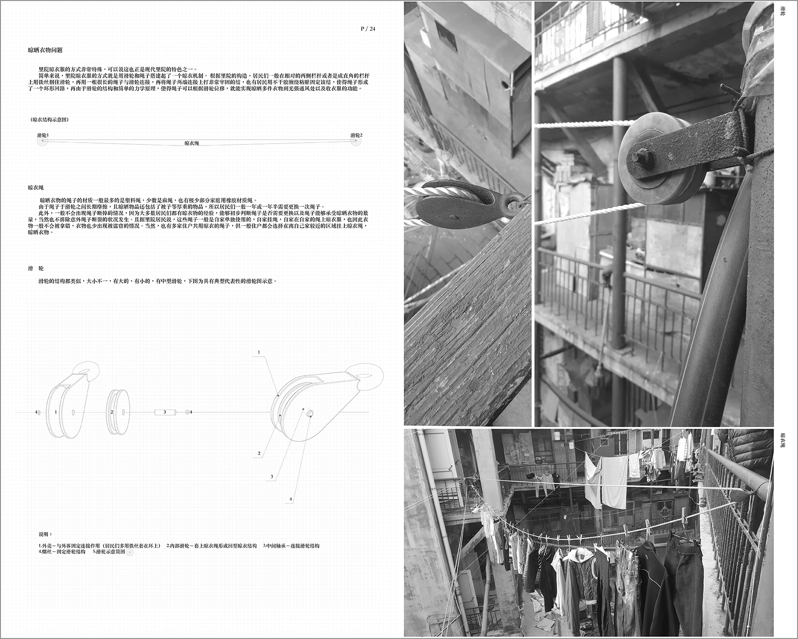里院晾晒衣物
里院居民现在的厨房：由于住房空间限制，过半的里面居民家庭中没有单独的厨房，居民们做饭一般是在室内甚至室外的某开放性环境中搭置的一块简易的做饭区域。比如在室外走廊中会放置一带锁木柜，内置煤气罐以及铁锅。根据我们的调查，大部分里院居民的“厨房”面积在3平方米以内，且做饭设施较简陋，结构较混乱，且如调味品、炊具、餐具等物品也无专门的放置区域。但有超过一半的受访者认为厨房卫生较为良好，但很难清理。关于难清理的原因最重要的是没有抽油烟机，且室内厨房通常设置在阳台中，极易使得室内油烟重，内外墙体熏黑油腻，较难清洗。
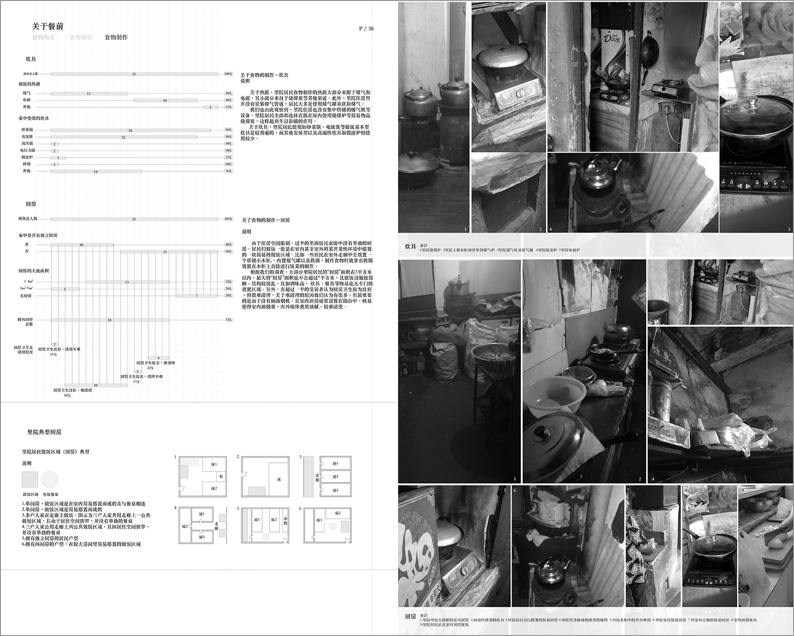里院居民现在的厨房
里院居民的饮食现状：我们认为，从做饭和吃饭时长可看出对待生活品质的态度。大部分里院居民用餐时间在10－30分钟内结束，用餐时间较短，这在一定程度上会导致用餐期间没有与家人进行太多的情感沟通，此外，用餐时间极短的人也有一部分为单人居住的外来务工人员。在访谈调研的居民中，花费功夫做饭的大部分家庭有孩子和老人。
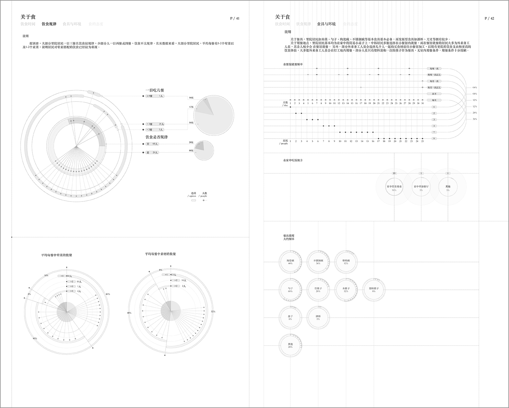里院居民的饮食现状
中韩基本情况：中韩地区位于山东省青岛市的城乡结合部，公路为东西走向，高速公路主要为南北走向，周围主要有可口可乐等大型企业的厂房分布，其余为一些散落的民居、平房，道路两边的人行道旁都种有树木。该地区目前已经成为青岛东部地区最大的自发（没有得到政府认可）的人力市场，具体形成原因以及具体形成时间已经无从可考。大部分来此地寻找工作的工人为周围经济相对落后的城市的农民。他们寻求的工作为一日到数日的带有一定技术性的体力型短工。这些工人为寻求工作，会在凌晨四点左右聚集在该区域附近，不少短工雇主也会前来，逐渐形成自发的人力市场。内容分为三小部分：地区基本情况介绍、一日内目标人群变化、目标人群生活状况。
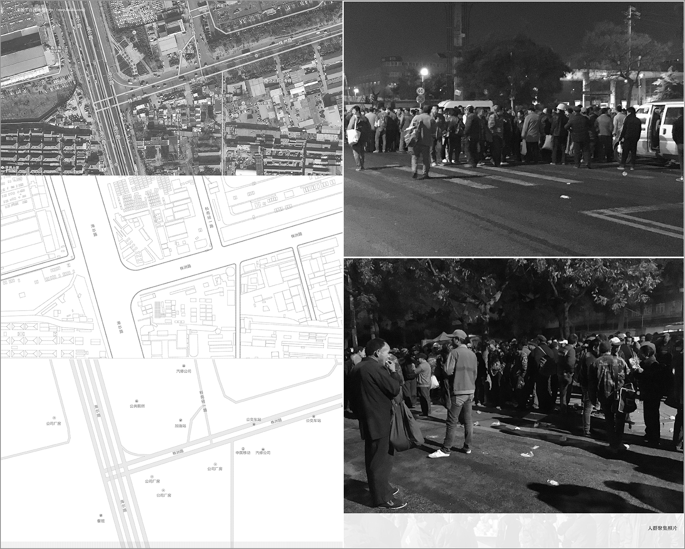中韩基本情况
一日内目标人群变化：统计一日内目标人群人数变化可知，在一日内，该地区目标人群峰值1600人左右，每天会形成大约4000~5000规模的人市。虽该人市自发形成，但也有一些约定俗成的规则，其中最重要的是“站位”，即该人力市场工人细分为不同工种，在人力市场形成之时，不同工种会站在人力市场所在区域的约定俗称的位置。根据工种的不同，将目标人群主要分为四大类：木工、保洁工、电焊工、水泥工。
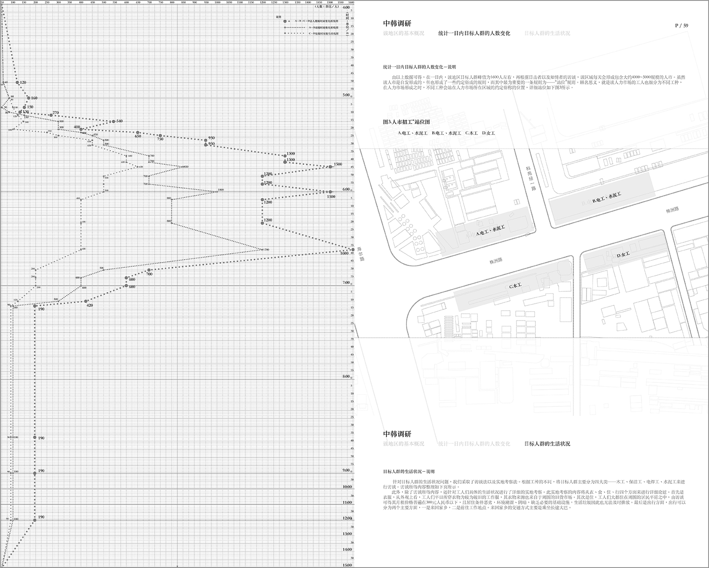一日内目标人群变化
目标人群生活状况：【衣】从外观上看，工人们平日所穿衣物为较为破旧的工作服，其衣物来源也来自于周围的旧货市场。【住】工人们大都住在周围的居民平房之中，由访谈可得其月租价格普遍在300元人民币以下，且居住条件恶劣，环境潮湿、阴暗，缺乏必要的基础设施，生活垃圾因此也无法及时排放。【行】出行可以分为两个主要方面，一是来回家乡，二是前往工作地点，来回家乡的交通方式主要是乘坐长途大巴。
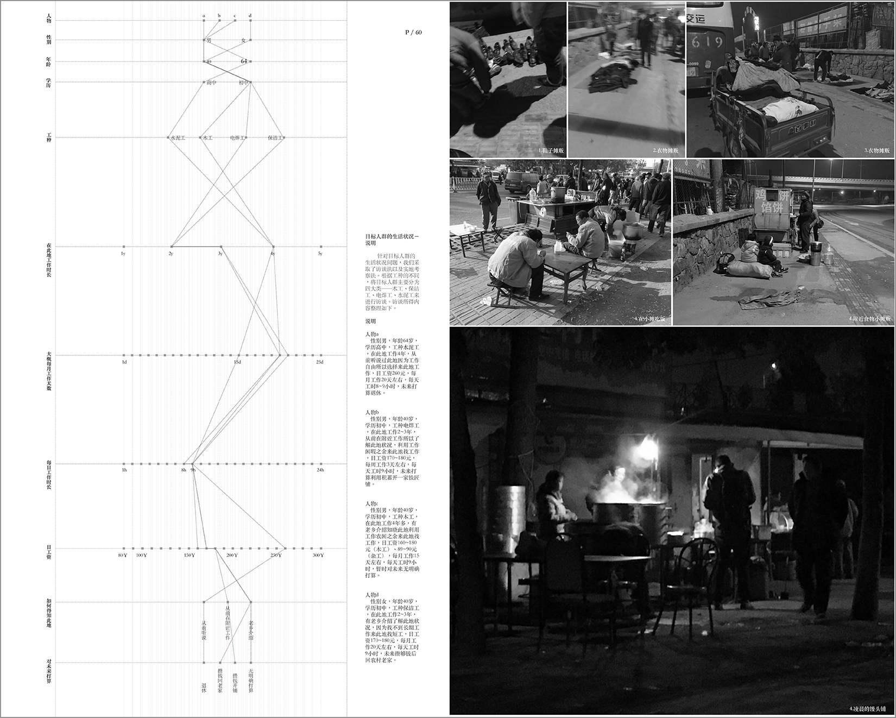目标人群生活状况
本章共有四个产品设计概念：小便器、旅行用压缩袋、火灾报警器、晾衣产品。
小便器产品设计：从调查知中韩区域存在着大量的人口流动的情况，在凌晨时分有数千人在此聚集。但此地缺乏相应的基础设施，附近公共厕所缺乏，面对上厕所问题大部分人只能选择随地处理，因此决定设计一个符合当地情况的厕所。
旅行用压缩袋设计：对于大部分务工人员来说，被褥是其旅途中的必备行李，但是由于被褥体积大、重量不轻的特点，在旅途中，被褥不仅会对务工人员自身造成困扰，也会对同行的人造成不便。我们选择了改造压缩袋的方案进行设计。
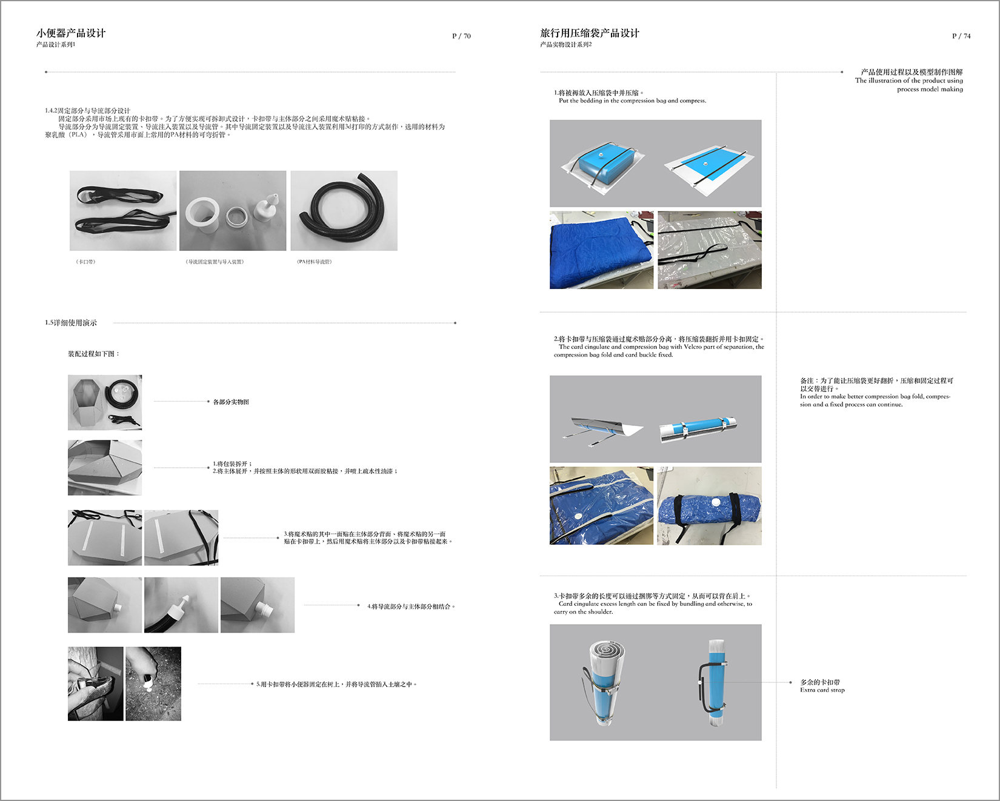小便器和旅行用压缩袋设计
火灾报警器设计：我们走访里院时，遇到广兴里火灾失火后现场。究其原因，是里院特殊的结构，里为住宅，外为商用店铺，餐馆的意外失火引起木质结构燃烧，从而失火。在档案中查询资料，也发现广兴里曾有失火记录。此外，根据我们的调研，在走廊上通常有居民自行搭建的木质结构厨房，而几乎没有任何的消防灭火设备，可以说存在极大安全隐患。我们针对此问题进行火宅报警系统设计。
晾衣产品设计： 我们走访里院时，发现里院晾衣存在如下问题：1.由于时代变化，现在人的衣物越来越多，而原先里院的晾衣设施已不能满足住户需求，因此晾衣则显得杂乱无章，环境显得脏乱；2.国人习惯让衣服晾晒太阳以杀菌；3.里院环境晾衣物存在雨天无法及时收取的问题；4.晾晒时油烟等产物会污染衣物，且衣物滴落影响下层人的活动。5.晾衣绳重物过多会使对建筑造成破坏。于是进行了晾衣产品的概念设计。
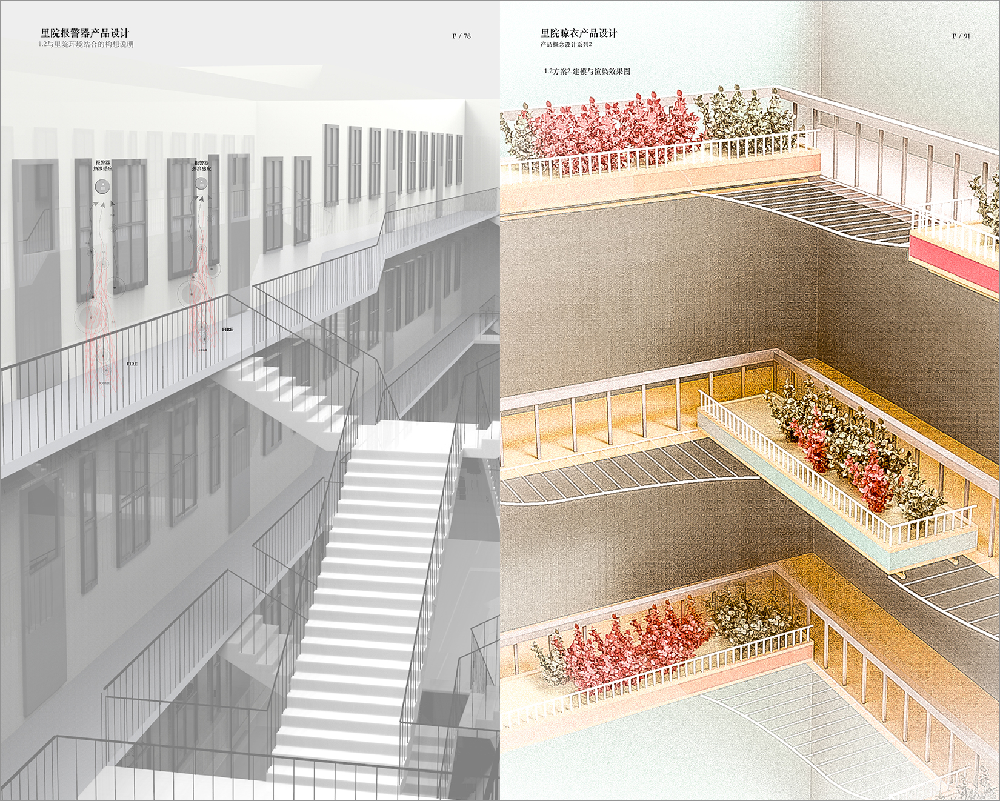火宅报警器及晾衣产品设计
本文简单介绍了青岛里院和中韩的调研与设计项目成果。感谢同学的配合和老师的指导，在调研过程中的亲身经历，让我们为底层人民的艰辛与智慧感慨良多，以该报告的形式作总结，希望向观众传达底层人民的生活。我们或许无法改变现状，但求有所知以后，在己位谋己事，珍惜生活。如欲阅读详细报告，请点击查看下载PDF文档。